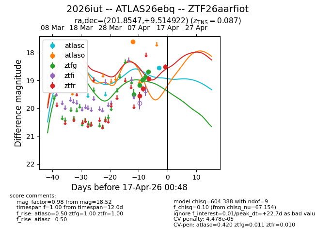
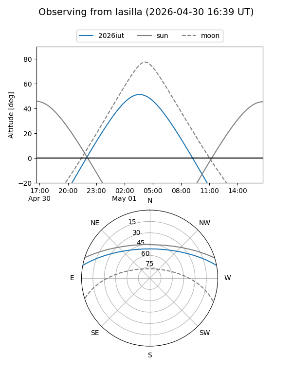
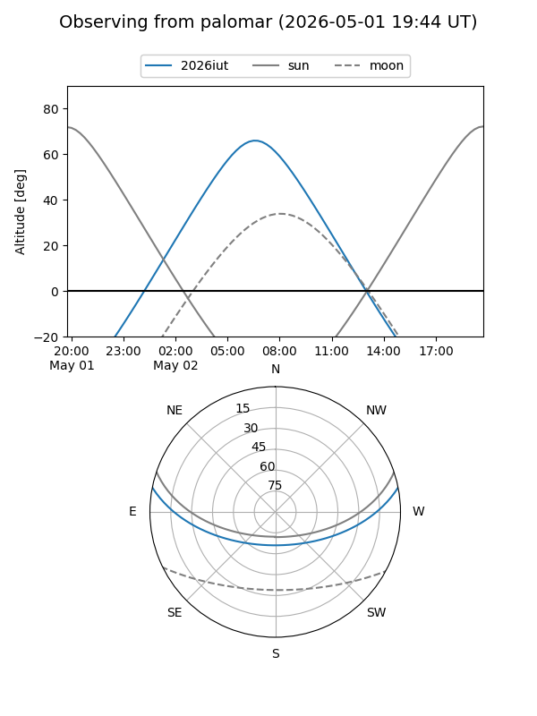
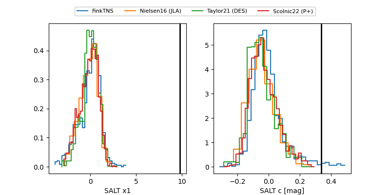

2026iut
Target 2026iut at 2026-04-17 00:53
Aliases and brokers:
FINK: link
Lasair: link
ALeRCE: link
TNS: link
YSE: link
alt names
ZTF26aarfiot (ztf,fink_ztf)
2026iut (tns,yse)
ATLAS26ebq (atlas)
Coordinates:
equatorial (ra, dec) = 201.8547,+9.51492
equatorial (HMS+DMS) = 13:27:25.13,+09:30:53.72
galactic (l, b) = (330.3653,+70.44579)
Flags:
confirmed ia
likely cv
Photometry:
last atlasc=18.55, atlaso=17.62, ztfg=18.69, ztfr=18.52
1 atlasc, 1 atlaso, 5 ztfg, 4 ztfr detections
Lightcurve

Visibility


Additional plots
